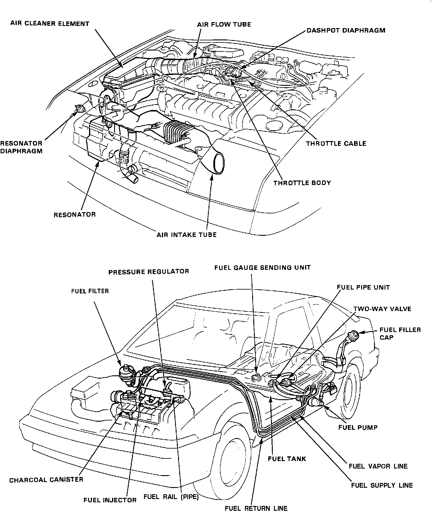

General System Description
Component Location:

The Fuel System consists of a fuel tank, high pressure fuel pump, main relay, supply and return lines, fuel filter, fuel rail, fuel injectors, as well as an air cleaner, dashpot, intake air hoses, throttle body and throttle cable. A resonator is also added to the intake air hose to provide additional silencing to the air drawn into the system.
The Fuel System delivers pressure regulated fuel to the injectors and cuts the fuel delivery when the engine is not running. The fuel quantity injected is determined by the length of time that the injector is open (the duration the current is applied to the injector solenoid coil). Airflow for all engine needs is controlled by the accelerator pedal, throttle cable, and throttle body assemblies.